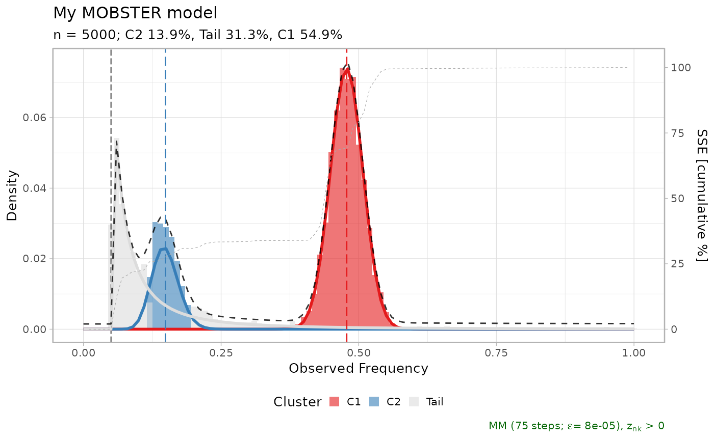
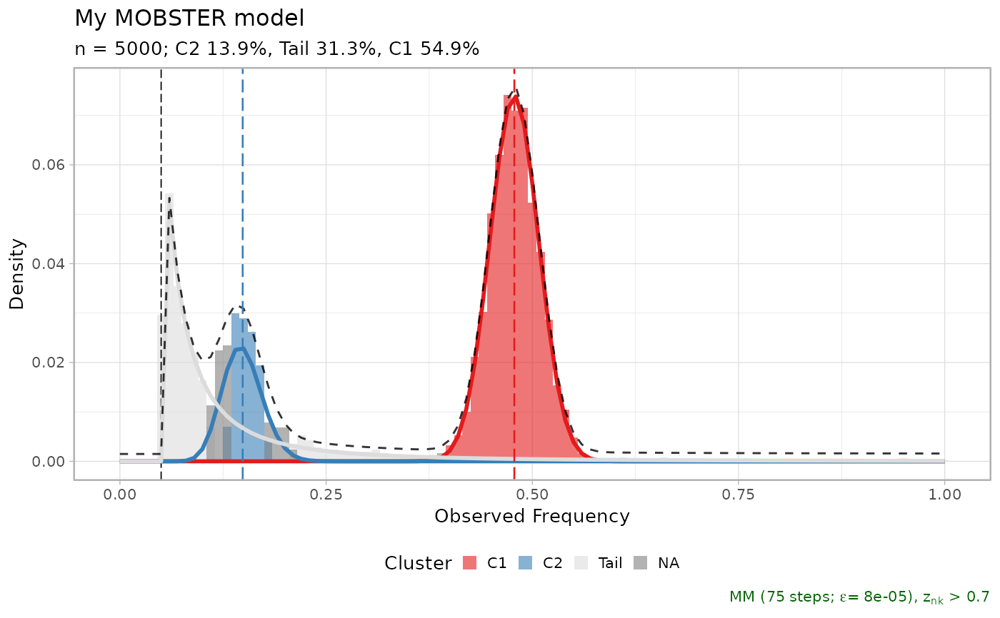
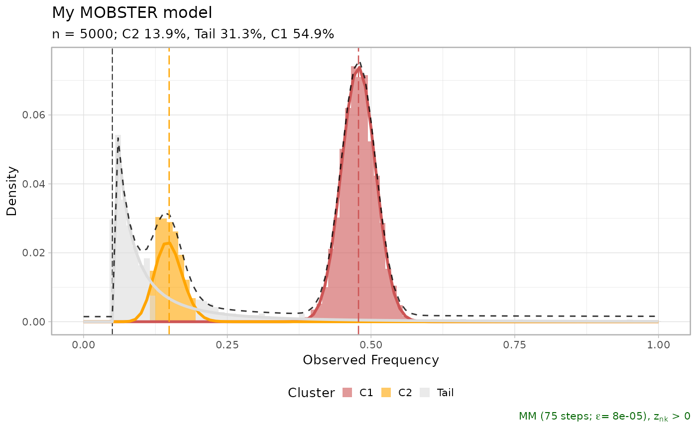
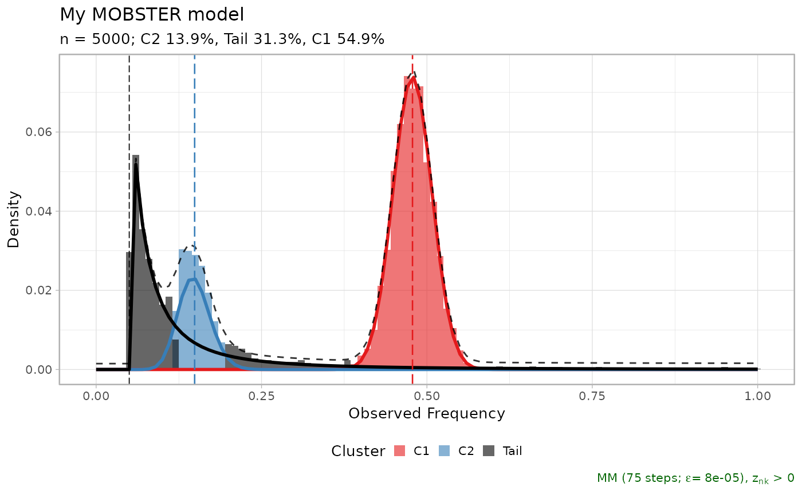

Plot a MOBSTER fit.
Usage
plot.dbpmm(
x,
cutoff_assignment = 0,
beta_colors = RColorBrewer::brewer.pal(n = 9, "Set1"),
tail_color = "gainsboro",
na_color = "gray",
annotation_extras = NULL,
secondary_axis = NULL,
...
)Arguments
- x
An object of class
"dbpmm".- cutoff_assignment
Parameters passed to run function
Clusterswhich returns the hard clustering assignments for the histogram plot if one wants to plot only mutations with responsibility above this parameter.- beta_colors
A vector of colors that are used to colour the Beta clusters. Colors are used by order for
"C1","C2","C3", etc. If too few colours are used therainbowpalette is used instead ofbeta_colors. In all cases the colour of the tail is set by the other parametertail_color.- tail_color
The colour of the tail cluster, if any.
- annotation_extras
A dataframe that contains a label column, and a VAF value. The labels will be annotated to the corresponding clusters of the VAF values.
- secondary_axis
NULLto leave the second axis empty,"SSE"to report the cumulative percentage of SSE error, and"N"to report the cumulative number of mutations.- ...
Examples
data(fit_example)
plot(fit_example$best)
plot(fit_example$best, secondary_axis = 'SSE')

plot(fit_example$best, cutoff_assignment = .7)
#> Warning: You did not pass enough input colours, adding a gray colour
#> Available: C1, C2, Tail
#> Missing: NA

plot(fit_example$best, beta_colors = c("indianred3", "orange"))

plot(fit_example$best, tail_color = 'black')
